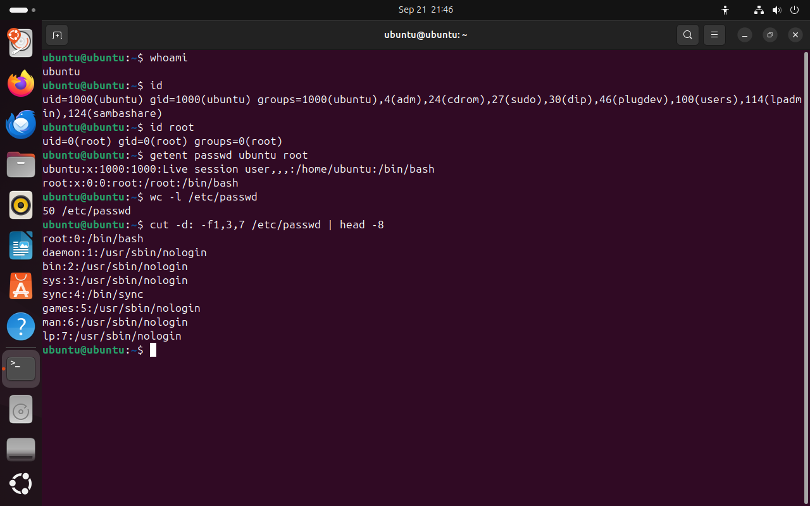
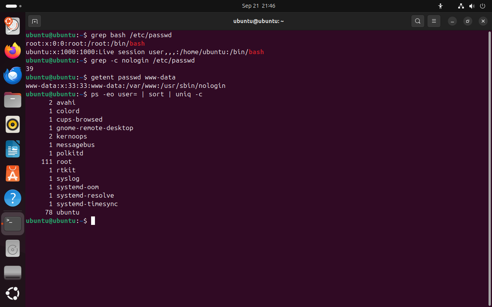

Часть 1 из 7
Учётные записи
В этой части разберём, что такое учётная запись, как система различает пользователей по номерам и что записано в файле /etc/passwd.
1.1 Кто работает в системе
Linux с самого начала создавался как система для многих пользователей. На одном сервере одновременно работают разработчики, база данных, веб-сервер и служба резервного копирования, и у каждого из них свои файлы и свои права. Чтобы отличать их друг от друга, система ведёт учётные записи.
Внутри системы пользователь — это прежде всего номер UID (user identifier). Имя нужно людям, а ядро сравнивает номера: в свойствах файла записан UID владельца, у процесса — UID того, кто его запустил. Номер группы называется GID (group identifier).
Сравнить можно с пропуском в офисное здание. На пропуске есть фамилия, но турникет проверяет номер карты. Два пропуска с одной фамилией турникет различит, а один номер на двух картах он будет считать одним человеком.
Команда whoami выводит имя текущего пользователя. Команда id выводит все номера сразу: UID, GID основной группы и список всех групп, в которых пользователь состоит. В Live-сеансе Ubuntu пользователь называется ubuntu и имеет UID 1000. У суперпользователя root UID всегда равен 0.
whoami# имя текущего пользователячто делает
Что делает команда. Выводит имя пользователя, от имени которого работает оболочка.
По частям:
whoami- вывести имя текущего пользователя
id# номера и группычто делает
Что делает команда. Выводит UID, GID основной группы и все группы текущего пользователя.
По частям:
id- вывести номера пользователя и его группы
id root# номера пользователя rootчто делает
Что делает команда. Выводит номера и группы учётной записи root.
По частям:
id- вывести номера пользователя и его группы
root- чей номер показать
- 1имя текущего пользователя
- 2UID — номер пользователя
- 3GID — номер основной группы
- 4groups — все группы пользователя
- 5у root UID 0
{kind=link}

Весь снимок ↗whoami и id: имя, номер пользователя, основная группа и все группы.
Что показывает снимок. Текущий пользователь — ubuntu с UID 1000; основная группа ubuntu, всего девять групп; у root UID и GID равны 0.
Где это пригодится. Команду id выполняют первой, когда не хватает прав: по списку групп видно, есть ли у пользователя нужная группа.
1.2 Файл /etc/passwd
Учётные записи хранятся в текстовом файле /etc/passwd, по одной строке на запись. На прошлом занятии мы открывали его описание командой man 5 passwd. Строка состоит из семи полей, разделённых двоеточием.
| № | Поле | Пример для ubuntu |
|---|---|---|
| 1 | имя входа | ubuntu |
| 2 | пароль: x означает, что хеш пароля в /etc/shadow | x |
| 3 | UID | 1000 |
| 4 | GID основной группы | 1000 |
| 5 | комментарий: полное имя или описание | Live session user,,, |
| 6 | домашний каталог | /home/ubuntu |
| 7 | оболочка, которая запускается после входа | /bin/bash |
Команда getent passwd имя выводит строку из базы учётных записей. Она читает и /etc/passwd, и другие источники, например сетевой каталог пользователей в организации, поэтому в скриптах предпочитают её. Команда cut -d: -f1,3,7 вырезает из строк поля 1, 3 и 7: -d: задаёт разделитель, -f — номера полей.
Нажмите на поле строки, чтобы увидеть его назначение.
getent passwd ubuntu root# две строки из базычто делает
Что делает команда. Выводит строки учётных записей ubuntu и root из базы пользователей.
По частям:
getent- получить запись из системной базы данных
passwd- база учётных записей
ubuntu- какая запись
root- какая запись
wc -l /etc/passwd# сколько строк в файлечто делает
Что делает команда. Считает строки в /etc/passwd, то есть число учётных записей.
По частям:
wc- посчитать строки, слова или байты
-l- считать только строки
/etc/passwd- какой файл (абсолютный путь)
cut -d: -f1,3,7 /etc/passwd | head -8# имя, UID и оболочка первых восьми записейчто делает
Что делает команда. Вырезает из строк /etc/passwd имя, UID и оболочку и оставляет первые восемь строк.
По частям:
cut- вырезать из строк нужные поля
-d:- поля разделены двоеточием
-f1,3,7- взять поля 1, 3 и 7: имя, UID и оболочку
/etc/passwd- из какого файла (абсолютный путь)
|- передать вывод левой команды на вход следующей
head- оставить только первые строки
-8- сколько первых строк оставить: 8
- 1имя входа
- 2x — пароль хранится в /etc/shadow
- 3UID
- 4GID основной группы
- 5комментарий
- 6домашний каталог
- 7оболочка
- 8в файле 50 учётных записей
- 9системные записи с оболочкой nologin
Строка учётной записи ubuntu по полям; число записей в /etc/passwd.
Что показывает снимок. Строка ubuntu в базе учётных записей состоит из семи полей; в /etc/passwd 50 записей, у большинства оболочка nologin.
Где это пригодится. По строке учётной записи администратор узнаёт домашний каталог и оболочку пользователя и проверяет, может ли он входить в систему.
1.3 Служебные учётные записи
Оболочка /bin/bash в Live-сеансе есть только у двух записей — root и ubuntu, а всего записей в файле пятьдесят. Остальные записи служебные: от их имени работают программы. Веб-сервер работает от имени www-data, журнал ведёт syslog, время синхронизирует systemd-timesync.
Служебные записи нужны для разграничения доступа между программами. Если веб-сервер работает от имени www-data, то ошибка в нём даёт доступ только к файлам, которые принадлежат www-data; остальные файлы системы для него закрыты. У служебных записей UID меньше 1000, а вместо оболочки указана программа /usr/sbin/nologin: она печатает отказ и завершает сеанс, поэтому войти в систему под такой записью нельзя.
| Диапазон UID | Кому выдаётся |
|---|---|
| 0 | root — суперпользователь |
| 1–999 | системные и служебные учётные записи программ |
| 1000 и больше | обычные пользователи, первый созданный получает 1000 |
| 65534 | nobody — запись без прав, для программ, которым права не нужны |
Команда ps -eo user= выводит владельца каждого процесса системы; sort сортирует список, а uniq -c считает одинаковые строки подряд. В результате видно, от имени каких учётных записей работают процессы.
grep bash /etc/passwd# записи с оболочкой bashчто делает
Что делает команда. Выводит строки /etc/passwd, в которых встречается bash, — учётные записи с оболочкой bash.
По частям:
grep- отобрать строки, в которых есть образец
bash- образец
/etc/passwd- в каком файле искать (абсолютный путь)
grep -c nologin /etc/passwd# сколько записей без входачто делает
Что делает команда. Считает строки /etc/passwd со словом nologin — учётные записи без входа в систему.
По частям:
grep- отобрать строки, в которых есть образец
-c- вывести не строки, а их количество
nologin- образец
/etc/passwd- в каком файле искать (абсолютный путь)
getent passwd www-data# учётная запись веб-серверачто делает
Что делает команда. Выводит строку служебной учётной записи веб-сервера www-data.
По частям:
getent- получить запись из системной базы данных
passwd- база учётных записей
www-data- какая запись
ps -eo user= | sort | uniq -c# сколько процессов у каждой записичто делает
Что делает команда. Выводит владельца каждого процесса, сортирует список и считает процессы каждой учётной записи.
По частям:
ps- вывести список процессов
-eo user=- -e — все процессы системы; -o user= — выводить только владельца, знак = убирает заголовок столбца
|- передать вывод левой команды на вход следующей
sort- отсортировать строки
|- передать вывод левой команды на вход следующей
uniq- объединить одинаковые соседние строки
-c- перед каждой строкой вывести, сколько раз она повторилась
- 1у root и ubuntu оболочка /bin/bash
- 239 записей с nologin
- 3UID 33 — служебная запись www-data
- 4домашний каталог веб-сервера
- 5nologin: войти под этой записью нельзя
- 6процессы root
- 7процессы пользователя ubuntu
{kind=link}

Весь снимок ↗Оболочка bash у двух записей, nologin у служебных; процессы по учётным записям.
Что показывает снимок. Оболочка bash есть только у root и ubuntu; 39 записей не могут входить в систему; процессы работают от имени root, ubuntu и служебных записей.
Где это пригодится. Если служба ведёт себя странно, по ps проверяют, от имени какой учётной записи она работает и к каким файлам поэтому имеет доступ.
Итоги части 1
- Учётная запись — имя, UID, основная группа, домашний каталог и оболочка.
- Ядро различает пользователей по номерам: UID и GID; у root UID 0.
- В
/etc/passwdодна строка на запись, семь полей через двоеточие. - Служебные записи с UID меньше 1000 и оболочкой nologin нужны программам.
В отчётСнимок id и строка вашей учётной записи из getent passwd с подписанными полями.